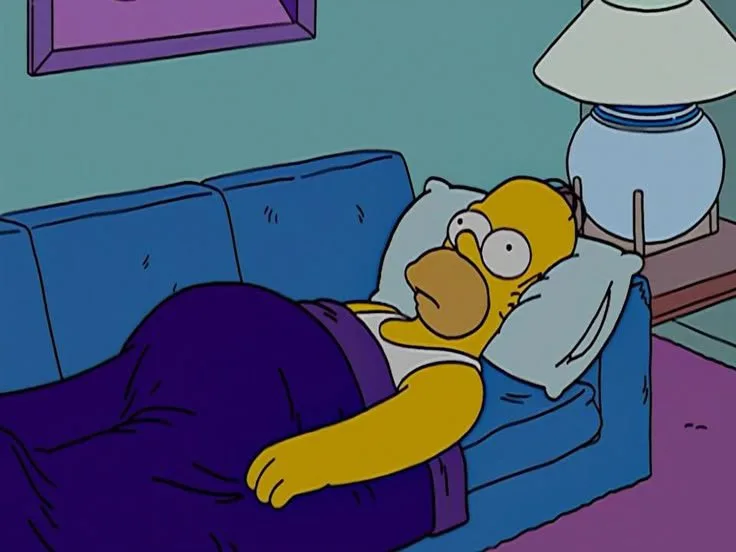
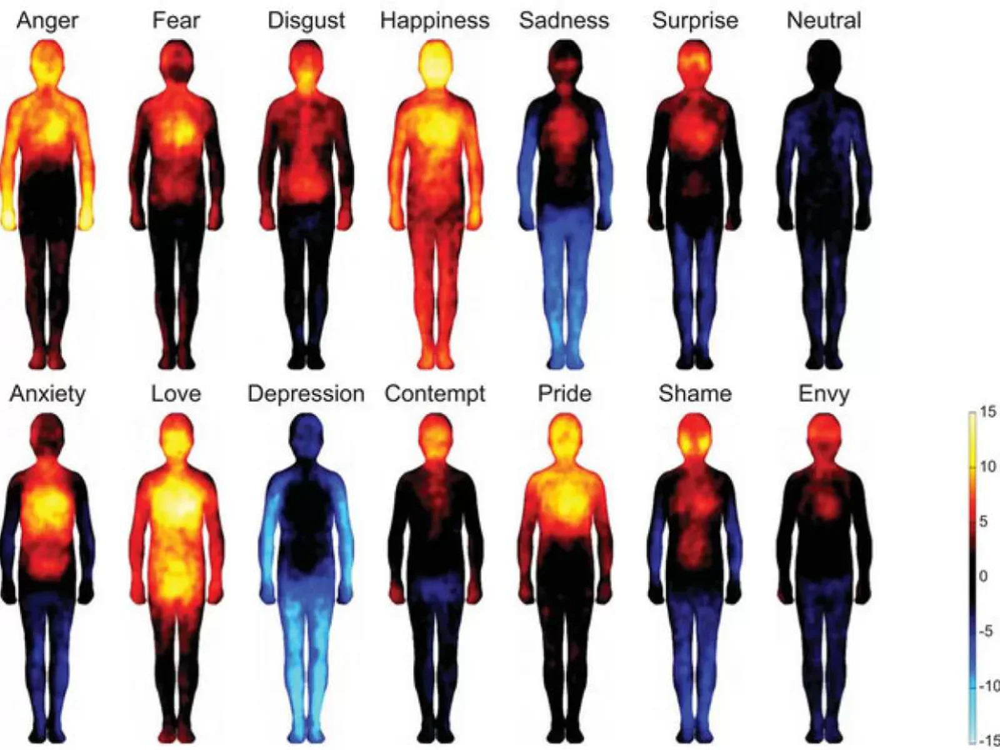

Conscious Man — la salud empieza por la conciencia
Unos 1300 hombres en un mismo lugar. Sin prisa, sin máscaras, sin necesidad de demostrar nada. Una imagen poderosa de cómo la salud empieza por la conciencia.
Leer más →Artículos sobre osteopatía, microkinesiterapia, ciencia y métodos modernos de terapia. Comparto el conocimiento adquirido a lo largo de años de práctica clínica e investigación científica.
Unos 1300 hombres en un mismo lugar. Sin prisa, sin máscaras, sin necesidad de demostrar nada. Una imagen poderosa de cómo la salud empieza por la conciencia.
Leer más →
El estereotipo del tipo duro que lo aguanta todo se está desmoronando. Cuanto antes reaccionemos, más podremos revertir — antes de que los cambios se consoliden.
Leer más →El ritmo de la respiración, el craneosacral y la pulsación de los líquidos corporales están unidos a los ritmos de la naturaleza. Por eso el tiempo pasado en la naturaleza complementa tan bellamente lo que comienza en la consulta.
Leer más →Algunas de las cosas más importantes no caben en ningún programa de estudios. Una reflexión inspirada en un pasaje de «¿La enfermedad tiene sentido?» de Thierry Janssen.
Leer más →
La ira tensa el vientre, el miedo bloquea la respiración. El estudio Nummenmaa (2014) confirma que las emociones tienen un impacto físico concreto en los tejidos. ¿Qué sabía la medicina tradicional y qué hace la osteopatía con ello?
Leer más →
Uno de los momentos más valiosos del examen es el test de escucha craneal. ¿Y si el cuerpo... no habla? A veces siento silencio — un silencio profundo y consciente.
Leer más →
A veces un paciente viene con dolor de espalda, pero la tensión comenzó hace años tras una ruptura difícil o una pérdida. El cuerpo almacenó ese estrés en su estructura.
Leer más →
El mayor agotamiento no proviene de la acción en sí, sino de la compulsión interna de ser constantemente más, mejor, más lejos. A veces el cambio comienza al detenerse.
Leer más →
A veces una persona no enferma porque sea débil. A veces simplemente ha vivido demasiado tiempo alejada de sí misma. La sanación comienza cuando regresa el silencio.
Leer más →
La osteopatía es un enfoque holístico de la salud que trata el cuerpo como una unidad. Descubre cómo las técnicas manuales suaves pueden restaurar el equilibrio de tu organismo.
Leer más →
Conoce el innovador método de terapia manual creado por Daniel Grosjean, que llega a la raíz de los problemas de salud a través de la memoria celular del cuerpo.
Leer más →
Nuestro cuerpo lo recuerda todo: lesiones, emociones, estrés. Descubre las bases científicas de la memoria celular y cómo la terapia manual puede liberar los recuerdos bloqueados.
Leer más →
La tecnología VR abre nuevas posibilidades en la rehabilitación de pacientes con enfermedades pulmonares, post-COVID y trastornos del estado de ánimo. Conoce los resultados de mis investigaciones científicas.
Leer más →
La neurocardiología moderna revela que el corazón posee su propia red de neuronas — el llamado "cerebro del corazón". Ya Aristóteles situaba la esencia del alma en el corazón.
Leer más →
El corazón no es una bomba de sangre — es un centro integrativo que mantiene un diálogo constante con todo el cuerpo. Neurológico, bioquímico, biofísico y energético.
Leer más →Si deseas saber más sobre los métodos de terapia o concertar una cita, contacta conmigo.
Reservar cita